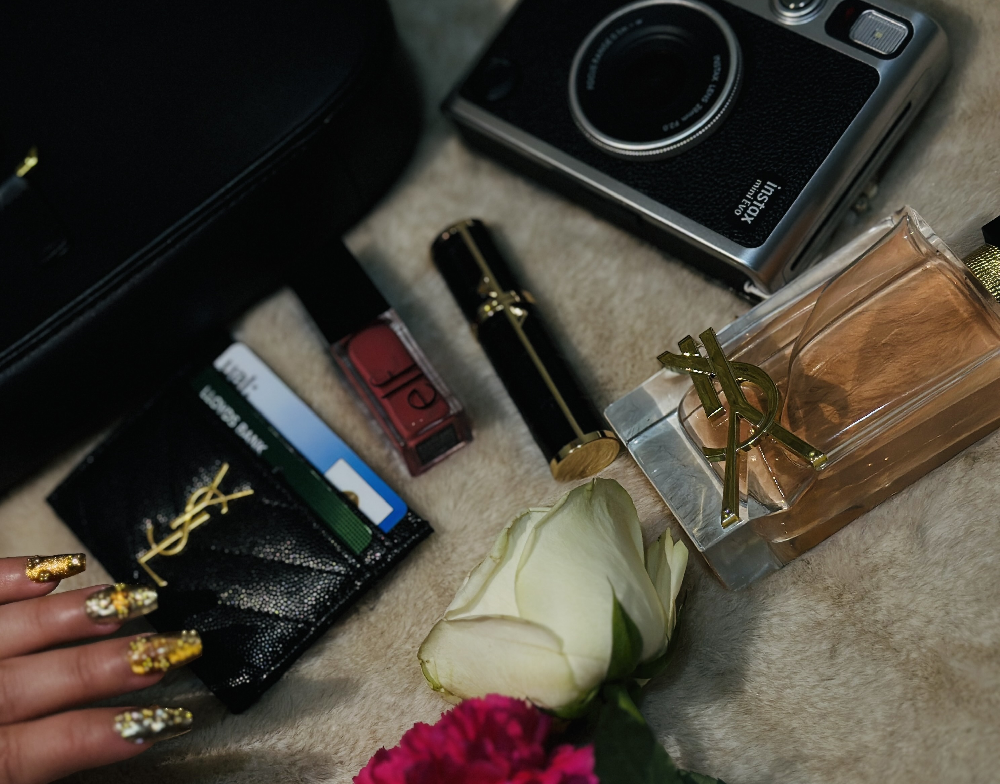

About Me
Nadia Akter
Business Computing Student • Makeup Artist • Luxury Beauty Studio
My name is Nadia Akter. I am 19 years old and currently studying Business Computing at university. My studies have developed my understanding of digital systems, organisation, and professional presentation.
Alongside my academic work, I have a strong passion for makeup artistry and beauty. I enjoy creating refined, elegant looks that enhance natural features and build confidence.
This portfolio represents my personal luxury makeup studio concept. It combines creativity, technical knowledge, and branding to demonstrate how beauty and digital design can work together professionally.
